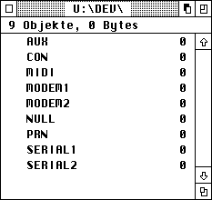
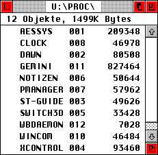

Unter MagiC wird Laufwerk U: bei der Initialisierung des DOS angelegt. Damit es von gängigen Programmen als existent erkannt wird, wird das entsprechende Bit in _drvbits gesetzt; es existiert jedoch kein entsprechendes BIOS-Laufwerk.

Innerhalb des Laufwerks gibt es einige Spezialverzeichnisse, und zwar:
Im Gegensatz zu MiNT sind dies jedoch keine eigenen Dateisysteme, sondern einfach nur Unterverzeichnisse des DFS für Laufwerk U:. Je nach Unterverzeichnis legt das U-DFS verschiedene Dateitypen und -treiber an. Da die Verzeichniskontrolle dem DOS_XFS obliegt, werden z.B. Schreibzugriffe auf ein Device im Verzeichnis per Dateidatum protokolliert. Das geht sogar soweit, daß ein Schreibzugriff auf das Wurzelverzeichnis von Laufwerk A: automatisch das Dateidatum von U:\A verändert.
Alle Verzeichnisse sind z.Zt. auf maximal 32 Einträge beschränkt, und Aufrufe von Dfree liefern nur den Wert Null zurück. Auf dem Wurzelverzeichnis können außer den bestehenden Dateien nur symbolische Links (per Fsymlink) erstellt werden.
Vor jedem Zugriff auf Laufwerk U: werden neu hinzugekommene Laufwerke per symbolischem Link hinzugefügt bzw. nicht mehr existierende entfernt; dies wird über _drvbits erkannt. Ein symbolischer Link für Laufwerk X: wird standardmäßig unter dem Namen U:\X angemeldet, und zeigt auf das Verzeichnis X:\. Symbolische Links können umbenannt oder gelöscht werden (auch ein umbenannter Link wird automatisch gelöscht, wenn das entsprechende Bit in der Systemvariablen _drvbits gelöscht wird).
Achtung: MiNT bindet die Laufwerke nicht als symbolische Links ein, daher kann man folgende Befehlsfolge absetzen:
| Dsetdrv | U: |
| Dsetpath | U:\A |
| Dgetpath | ==> U:\A |
| Dsetpath | .. |
| Dgetpath | ==> U:\ |
Bei einem symbolischen Link wechselt man hingegen tatsächlich den Pfad, d.h. in der dritten Zeile erscheint A:\ als aktueller Pfad. Um dieses Problem zu umgehen, gibt es eine Sonderbehandlung im Kernel, der die obige Befehlsfolge auch in MagiC ermöglicht. Dabei gibt es allerdings ein Problem: Der symbolische Link darf nicht umbenannt werden, da sonst folgendes passiert:
| Frename | U:\A U:\FLOPPY |
| Dsetdrv | U: |
| Dsetpath | U:\FLOPPY |
| Dgetpath | ==> U:\A |
| Dsetpath | .. |
| Dgetpath | ==> U:\ |
Weil alle Dateifunktionen auf U: genauso funktionieren wie auf einer Diskette ist es auch möglich, Verzeichnisse wie U:\DEV umzubenennen. Achtung: Dies sollte tunlichst vermieden werden, da sonst Anwenderprogramme ihre Gerätetreiber nicht mehr finden können.
Querverweis: BIOS GEMDOS XFS-Konzept in MagiC Test auf Pipes
In diesem Verzeichnis werden Gerätetreiber (Devices) eingetragen. Es handelt sich dabei um Pseudodateien, die nur dem DOS, nicht jedoch dem BIOS bekannt sind.

Auch die altbekannten Gerätenamen finden sich in diesem Verzeichnis wieder, denn es gilt:
Da auf die hier installierten Geräte mit den normalen Dateifunktionen des GEMDOS zugegriffen werden kann, ist es z.B. möglich ein Textdokument durch einfaches Speichern per Fwrite auf dem Drucker auszugeben. Dateinamen wie CON: werden dabei vom Kernel automatisch in die richtige Form umgewandelt (in diesem Fall also: U:\DEV\CON).
Abhängig vom Rechnermodell stehen per Default die folgenden Devices zur Verfügung:
| Gerät | Beschreibung |
| AUX | BIOS-Gerät 2 |
| CON | Console |
| LAN | BIOS-Gerät 7, i.a. SCC, Kanal A |
| MIDI | BIOS-Gerät 3, beim Ausgabestatus hingegen das Gerät mit der Nummer 4. |
| MODEM1 | BIOS-Gerät 6, i.a. die mit dem ST-MFP realisierte serielle Schnittstelle, auf dem Falcon der SCC mit Kanal-B. |
| MODEM2 | BIOS-Gerät 7, i.a. SCC, Kanal B |
| NULL | leere Pseudodatei, liefert beim Schreiben immer den Status Ok und beim Lesen den Wert EOF (kein Zeichen verfügbar). |
| PRN | BIOS-Gerät 0, bei der Ausgabe wird bei einem Timeout abgebrochen. |
| SERIAL1 | BIOS-Gerät 8, i.a. der TT-MFP |
| SERIAL2 | BIOS-Gerät 9, i.a. SCC, Kanal A |
Von CON: einmal abgesehen, arbeiten alle Geräte im "Raw-Modus", d.h. Steuersequenzen wie Control-C werden nicht berücksichtigt.
Weitere Geräte können jederzeit per Dcntl erstellt und eingetragen werden; aufgrund des inkompatiblen Treiberformates muß jedoch der Opcode DEV_M_INSTALL und nicht wie sonst üblich DEV_INSTALL benutzt werden. Die vorhandenen Geräte können mit den üblichen Methoden umbenannt und gelöscht werden; im Gegensatz zu MiNT wird das Löschen eines Gerätes über den Gerätetreiber selbst abgewickelt, der sich so aus den entsprechenden Systemvektoren zurückziehen und den Speicher freigeben bzw. sich beenden kann. Ein weiterer Unterschied zu MiNT besteht darin, daß MagiC die volle Funktionalität des DOS-Dateisystems zur Verfügung stellt, d.h.:
Hinweis: Über Fcreate können hier keine Dateien erzeugt werden; es ist allerdings möglich per Fsymlink symbolische Links anzulegen.
Querverweis: BIOS GEMDOS XFS-Konzept in MagiC
In diesem Verzeichnis werden Pipes abgelegt; es handelt sich dabei um temporäre Dateien, die insbesondere für den Datenaustausch zwischen Prozessen benutzt werden.
Man unterscheidet unidirektionale und bidirektionale Pipes: erstere erlauben einen Datenfluß nur in einer Richtung, letztere können in beide Richtungen übertragen, jedoch nicht gleichzeitig. Bidirektionale Pipes finden z.B. beim Drag&Drop-Protokoll Verwendung. Pipes liefern beim Lesen per Fread grundsätzlich EOF (End-of-File) wenn sie leer sind, oder kein schreibender Prozeß vorhanden ist. Analog wird beim Schreiben per Fwrite der Wert EOF geliefert, falls kein lesender Prozess vorhanden ist.
Der Zugriff erfolgt dabei rein asynchron, d.h. Applikationen warten auf das Lesen bzw. Schreiben und wecken ggf. eine andere Applikation wieder auf. Pipes werden automatisch gelöscht, wenn das letzte Programm, daß sie benutzt, die sie repräsentierende Datei geschlossen hat.
Hinweis: MagiC unterstützt maximal 32 Pipes gleichzeitig. Ein Fseek auf Pipes führt grundsätztlich zur Rückgabe von 0L, d.h. der Dateizeiger kann nicht beeinflußt werden. Im Verzeichnisfenster erscheinen Pipes mit einer Länge von 2 bzw. 4k und dem Datum ihrer Erstellung. Falls beim Öffnen einer Pipe eine Kennung > 31 geliefert wird, kann die Systemfunktion Fselect nicht benutzt werden.
Darüber hinaus ist ab MagiC 3 folgendes zu beachten:
Pipes mit Modus 4 (Pseudo-TTYs) werden nicht unterstützt.
MagiC kennt nur uni- und bidirektionale Pipes und erstellt bei Modus 4
eine bidirektionale Pipe. Der Hauptgrund für Pipes sind zur Zeit das
Drag&Drop-Protokoll.
Pipes liefern bei Finstat/Foutstat die Anzahl der vorhandenen
bzw. noch freien Bytes im Block.
Wird eine Pipe geschlossen, so werden alle wartenden Programme
aufgeweckt, um evtl. mögliche Deadlocks zu vermeiden.
Querverweis:
Fcreate Fread Fwrite Fclose Fpipe Test auf Pipes
Dieses Verzeichnis gibt einen Überblick über die z.Zt. aktiven Prozesse im System. Jeder Eintrag besteht aus den folgenden Komponenten:

In der Abbildung oben beispielsweise, besitzt der Prozess XCONTROL die PID 4 und belegt z.Zt. 93460 Bytes Speicherplatz.
Prozess IDs werden beim Programmstart vergeben und beim Terminieren freigegeben. Das Löschen einer Datei in diesem Verzeichnis hat zur Folge, daß der entsprechende Prozess (über den Programmanager des AES) zerstört wird.
Hinweis: Die MiNT-konformen Prozess-Attribute (spezielle Dateiattribute) werden von MagiC z.Zt. nicht unterstützt. Der Name eines Prozesses kann auch über die Environment-Variable _PNAM ermittelt werden; die Prozess-ID findet sich auch in der Basepage.
Querverweis: GEM Style-Guidelines Task-Manager
Dieses Verzeichnis dient als 'Ablage' für Shared Memory; hier können also Dateien angelegt werden die Speicherblöcke repräsentieren, und auf die andere Prozesse zugreifen dürfen.
Über Shared Memory (gemeinsamen Speicher) läßt sich sehr leicht eine Interprozess-Kommunikation (IPC) realisieren.
Querverweis: Fcntl SHMGETBLK SHMSETBLK